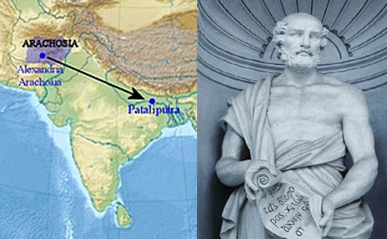

India is a country in South Asia known for its geographical diversity, rich cultural
heritage, and historical significance. It is often called a land of unity in diversity due to its
varied landscapes, languages, traditions, and beliefs that coexist harmoniously across the
country.
In ancient times, India was referred to by different names, including Bharat and
Jambudvipa. The name Bharat is derived from the ancient king Bharata, and Jambudvipa
was used in ancient texts to describe the Indian subcontinent.
Natural Boundaries of the Indian Subcontinent
North: The towering Himalayan mountain range forms a natural barrier, protecting the northern boundary.
South: The Indian Ocean surrounds the southern tip of the subcontinent.
West: The Thar Desert and the Arabian Sea serve as natural boundaries to the west.
East: The Bay of Bengal and dense forests of the northeastern region form the eastern boundary.
Regions Recognizable from the Map
Kalinga: Known for the famous Kalinga War fought by Emperor Ashoka.
Magadha: A well-known ancient region, home to powerful dynasties and the Mauryan Empire.
Kosala: A historical kingdom, linked with the epic Ramayana.
Vanga: A region that corresponds to modern Bengal.
Dakshina Kosala: Another region linked to southern India’s cultural history.
Saurashtra: Known today as part of Gujarat.
Anga: One of the ancient kingdoms mentioned in the Mahabharata.
Surashtra: Another familiar region, correlating to parts of present-day Gujarat.
'Snowy Mountains'brief description of Bhārata
‘snowy mountains’ mentioned refer to the Himalayas, which are located in the
northern part of India. These mountains are known for their snow-covered peaks and serve as
a natural boundary for the subcontinent.
The brief description of Bhārata seems correct as it highlights the geographical diversity of
India, including the snowy Himalayas, vast plains, deserts, and surrounding seas. This
reflects the rich and varied landscapes that shape the country’s identity.
Language Name of India
Persian Hindustan
Greek Indos
Latin India
Chinese Yin-du or Tianzhu
Arabic & Persian Al-Hind
English India
French Inde
Key Historical Facts and Insights
Historical Statements
Jambudvīpa during Aśhoka’s Time: True – During Aśhoka’s time, 'Jambudvīpa' included what is today India, parts of Afghanistan, Bangladesh, and Pakistan.
The Mahābhārata’s Regions: True – The Mahābhārata lists regions including Kashmir, Kutch, and Kerala.
The Origin of the Term ‘Hindustān’: False – The term ‘Hindustān’ did not first appear in a Greek inscription more than 2,000 years ago.
‘Hindu’ in Ancient Persian: False – In ancient Persian, the word ‘Hindu’ referred to the region beyond the Indus River, not specifically the Hindu religion.
Origin of ‘Bhārata’: False – 'Bhārata' is derived from ancient Indian texts and traditions, not given by foreign travellers.
Names Symbolizing India’s Diversity and Culture
Sanghamitra: Reflects the idea of unity in diversity, combining "Sangha" (community) and "Mitra" (friend), symbolizing harmony and collaboration.
Suryadesh: Highlights India’s connection to the Sun, symbolizing enlightenment, prosperity, and vitality.
Reasons for Ancient Travel to India
Trade: India’s rich resources, including spices, silk, precious stones, and textiles, attracted merchants seeking to establish trade relations.
Education and Knowledge: Renowned learning centres like Nalanda and Takshashila drew scholars interested in philosophy, astronomy, medicine, and mathematics.
Pilgrimage and Spirituality: Travellers came to visit sacred sites and explore India’s spiritual traditions, as the birthplace of Hinduism, Buddhism, and Jainism.
Cultural Exchange: Artists, musicians, and writers visited to experience India’s vibrant cultural heritage, including art, architecture, and literature.
Conquests and Empires: Military expeditions and empire expansion motivated some to travel, seeking power, land, and wealth.
Greek and Chinese Travelers
Megasthenes
In around 302 BCE, he came to India in the Mauryan court of Chandragupta Maurya as an ambassador of Greek ruler Seleucus I Nicator of the Seleucid dynasty.
He described India in his book Indica, which is now lost but has been partially reconstructed from later authors' writings.
Observations by Megasthenes
Theft was rare.
Farmers were never harmed during wars.
There was no slavery.
Indians did not borrow or lend money on interest.
People refrained from drinking wine except during sacrifices.

Indian Society
Megasthenes described the division of Indian society into seven classes:
Philosophers
Farmers
Shepherds and Hunters
Artisans
Soldiers
Overseers/Spies
Councillors and Assessors
Occupations were hereditary, and endogamy was practiced.
Provincial and Local Administration
Agronomoi were district officials.
Six committees of five members each managed the administration of Pataliputra, looking after:
Industries
Foreigners
Births and Deaths
Trade
Manufacture and Sale of Goods
Collection of Sales Tax
The army administration also consisted of six committees managing the navy, infantry, cavalry, chariots, elephants, equipment, and transport.
Land Revenue
The main source of income for the state, varying from one-fourth to one-sixth of the produce.
Collected directly by the king’s officials without intermediaries.
The king could grant tax exemptions or reductions when necessary.
Mentioned in Greek texts that all land in India was owned by the king.
Law and Justice
The king administered justice.
Criminal law was severe, with punishments such as mutilation.
No written laws were present.
Other Observations
The Mauryan palaces were described as some of the greatest creations of mankind.
The Pandyas were first mentioned by Megasthenes, celebrated for pearls and ruled by a woman, indicating a matriarchal society.
Other Greek Travelers
Traveler
Time Period
Sent By
Deimachus
Bindusara (297–273 BCE)
Antioch I Soter, Seleucid Empire
Dionysius
Ashoka (268–232 BCE)
Ptolemy Philadelphus of Egypt
Heliodorus
Bhagbhadra of Sunga Dynasty
Antialcidas of Taxila
Chinese Travelers
Fa-Hien/Faxian
A Buddhist monk from China who visited India during the reign of Chandragupta II (Vikramaditya).
Recorded his observations in a travelogue titled Fo-Kwo-Ki (A Record of Buddhistic Kingdoms).
Described Buddhist pilgrimages and noted the division of Buddhism into Mahayana and Hinayana.
Observed the declining condition of Buddhism in Kapilavastu, Gaya, and Kushinagar.
Highlighted law-abiding people, religious tolerance, and vegetarianism.
Mentioned harmony in society despite the existence of caste divisions.
Hieun Tsang (Xuan Zang)
A Chinese pilgrim during Harsha's reign, known as the "Prince of Pilgrims."
A Buddhist monk who visited sacred Buddhist sites across India.
Recorded detailed accounts of Central and South Asia in his work Si-yu-ki.
Praised Emperor Harsha and his administration.
Described Harsha's division of income into four parts:
One part for administrative routines of the state.
Second part for government employees.
Third part for scholars.
Fourth part for charity to Brahmanas and Buddhist monks.
Governance and Law
The kingdom was well-governed, free from revolts, with few cases of law-breaking.
Hieun Tsang reported being robbed twice, indicating some law and order issues.
Taxation was light, and subjects were free from government oppression.
Four types of ordeals were used as punishment: water, fire, weighing, and poison.
Religious and Social Observations
Caste-system was rigid.
Brahmanism, Buddhism, and Jainism were all popular religions.
Buddhism was in decline, while Brahmanism was progressing, as inferred from his descriptions of cities.
Religious assemblies were organized by Emperor Harsha at Prayag (Allahabad) and Kanauj.
Nalanda University
Reported that Nalanda was supported by the revenues of an estate of 100 villages and alms from patrons, including Emperor Harsha.
Provided free education for 10,000 students, with a large staff to assist them.
Yijing / I-Tsing (671-695 CE)
Book: The Record of Buddhism As Practiced in India.
Memoirs of Eminent Monks contained accounts of 56 Chinese monks who traveled to India in the 7th century.
Documented his 25-year travels, contributing to the knowledge of Srivijaya and other kingdoms along the route to Nalanda.
Translated numerous Buddhist texts from Sanskrit to Chinese.
Arabian Travelers
Sulaiman (Iran, Mid-9th Century)
Praised Pratihara cavalry as the finest.
Referred to:
Al-Juzr as Mihir Bhoja.
Ruhma as Dharma Pala.
Amoghvarsha as one of the four great kings of the world.
Al-Masudi (Baghdad, 10th Century)
Known as the 'Herodotus of the Arabs' for combining history and scientific geography.
Noted that the Pratihara kingdom lacked access to the sea, leading to Rashtrakuta dominance in Gujarat.
Identified Mihir Bhoja as King Baura.
Al-Beruni (973 CE)
Born in Khwarazm (present-day Uzbekistan); fluent in several languages including Sanskrit.
Accompanied Mahmud of Ghazni to India at the age of 44.
Authored Kitab-ul-Hind, providing keen observations on Indian society and culture.
Key Observations
Social divisions in India were similar to ancient Persia.
Criticized the caste system and the notion of pollution, considering it contrary to natural laws.
Noted societal issues like child marriage, sati, widow remarriage prohibition, and the low status of women.
Additional Notes
Translated Patanjali’s grammar work into Arabic and Euclid’s works into Sanskrit.
Recorded festivals like Guru Tritiya and Vasanta, highlighting the role of women and children in celebrations.
Critiqued the isolationist attitude of Indian society and its sense of superiority.
Marco Polo (1271-1295 CE)
A Venetian merchant and adventurer who traveled along the Silk Road.
Documented his journey in The Travels of Marco Polo (Il Milione).
Visited the Tamil Pandya kingdom near Tanjore in AD 1292.
Described Motupalli as a flourishing trade center and praised the Ramappa Temple as "the brightest star in the galaxy of temples."
Observations in India
Noted the hot climate, minimal clothing, and rice as the staple crop.
Ibn Battuta
Ibn Battuta, a medieval Islamic traveler and scholar, was born in Tangiers, Morocco, in 1304 CE. His accounts provide significant historical insights into various aspects of the regions he visited.
Key Observations and Contributions
Book of Travels: His book, Rihla, written in Arabic, offers detailed descriptions of his journeys, including Zaytun (Quanzhou).
Descriptions of Muhammad Bin Tughlaq: He portrayed the king as an eccentric man with a severe temper.
Harihara I’s Reign: He left an account of Harihara I’s rule in his book.
Insights on Tughlaq Empire: Detailed information about its administrative structure, including espionage and communication systems.
Postal System: Mentioned a courier system with horse couriers (Horse Post – Uluq) every four miles and foot couriers (Dawa) every mile.
Social and Cultural Observations
Described the practice of Sati (burning of widows) and the prevalence of the caste system.
Detailed the slave market, slavery, and social customs such as Muslim men being allowed to have four wives.
Noted that adultery was a serious crime, despite men engaging in multiple relationships.
City Life and Economy
Cities were densely populated and prosperous, with vibrant markets and streets.
The bazaar served as an economic hub and a center of social and cultural activities, featuring mosques and temples.
Trade and commerce flourished, with significant activity in Malabar ports like Calicut and Kollam, attracting ships from China and Persia.
Agriculture and Trade
Indian textiles, including cotton cloth, muslin, silk, brocade, and satin, were in high demand.
The fertile soil allowed farmers to grow two crops per year (Rabi and Kharif). Rice was sown three times a year in the east, with sugarcane, wheat, oilseeds, sesame, cotton, and barley also cultivated.
Travellers During Vijayanagar Period
Key Travelers and Their Observations
Nicolo de Conti (1420-1421): Italian traveler during Devaraya I’s reign. He noted city fortifications and slavery.
Abdur Razzaq (1443-1444): Persian diplomat during Devaraya II’s rule, described the wealth and life of the Vijayanagar kingdom.
Athanasius Nikitin (1470-1474): Russian merchant during the Bahmani kingdom under Muhammad III. His narrative, The Journey Beyond Three Seas, provides insights into the period.
Duarte Barbosa (1500-1516): Portuguese traveler during Krishna Deva Raya’s reign, highlighted the religious freedom in the kingdom.
Domingo Paes (1520-1522): Portuguese chronicler during Krishna Deva Raya’s reign, documented the Devadasi system and authored Chronicle of the Vijayanagar Kings.
Fernao Nuniz (1535-1537): Portuguese merchant during Achyutdeva Raya’s rule, observed the prevalence of Sati, polygamy, and women’s roles in the empire.
Notable Mughal Period Travelers
Francisco Pelsaert (1595-1630)
He was a Dutch merchant and representative of the Dutch East India Company (VOC).
In 1620, he came to India for trading purposes and remained there until 1627.
He traveled to different parts of Mughal India and stayed in Agra for seven years before departing to Java.
Peter Mundy (1630-1634)
A British merchant, trader, and traveler.
Visited India during the reign of Mughal Emperor Shah Jahan.
Jean Baptiste Tavernier
He was a French gem merchant who visited India during the reigns of Shah Jahan and Aurangzeb.
Provides detailed accounts of diamonds and diamond mines in India in his book, Six Voyages.
Fascinated with India’s trading conditions, he compared them to Iran and the Ottoman Empire.
Italian Doctor Manucci (1653-1708)
He never returned to Europe and settled down in India.
Francois Bernier (1656-1668)
Frenchman, doctor, political philosopher, and historian.
Served as a physician to Dara Shikoh and was patronized by Danishamand Khan, an Armenian noble of Aurangzeb.
His book, Travels in the Mughal Empire, presents a critical comparison of India to Europe, highlighting differences such as the lack of private property in land in Mughal India.
Discussed the negative effects of land policies on agriculture, peasantry, and living standards, except for the ruling aristocracy.
Noted the inflow of vast quantities of precious metals into India through trade and the existence of a prosperous merchant community engaged in long-distance commerce.
Other Notable Travelers
Mahmud Wali Balkhi: Traveled widely in the 1620s and even became a sanyasi for a time.
Giovanni Careri (c. 1690): An Italian traveler who provided a graphic account of silver’s journey across the globe to India and the scale of cash and commodity transactions in 17th-century India.
Shaikh Ali Hazin: Came to north India in the 1740s.